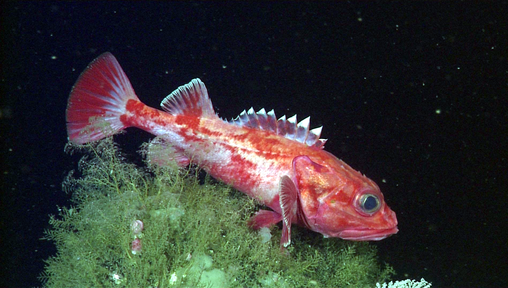

09 De zoektocht naar een PhD
Solliciteren voor
promotieplek en en de Fathomnet
programmeer competitie.
Ik weet nog dat ik op de basisschool in groep 8 een mavo advies kreeg en dat ik school lastig vond. Ik had moeite om mezelf ertoe te zetten om te gaan leren en komend uit een onderwijs gezin was goed je best doen voor school een belangrijke eigenschap. Met tegenzin oefende ik als kleine jongen extra voor spelling en begrijpend lezen terwijl mijn broer aan een half uurtje per dag studeren genoeg had om fluitend het gymnasium te behalen. Naarmate de jaren vorderden heb ik ook het plezier in het leren gevonden. Na mijn wereldreis kwam ik op de Wageningen Universiteit waar ik zelfs merkte dat ik door mijn achtergrond erop gebrand was om een stap extra te zetten ten opzichte van studenten voor wie de universiteit een vanzelfsprekendheid was. Zelfs na het behalen van het masterdiploma bos- en natuurbeheer was ik nog niet uitgeleerd. Eigenlijk begon het nu pas omdat er op het gebied van kunstmatige intelligentie nog zoveel te leren viel. De meeste studenten die na hun master willen doorstuderen proberen in een PhD programma binnen te komen om zich te specialiseren in een wetenschappelijk veld.

Leuk idee, maar hoe ga je met een bos- en natuurbeheer diploma en nauwelijks programmeerervaring binnenkomen in deze super competitieve kunstmatige intelligentie PhD programma’s? Mijn cijfers op de Wageningen Universiteit waren zeker niet slecht maar ook weer niet dat je zegt cum laude. Bovendien halen universiteiten natuurlijk liever iemand binnen die al veel langer met kunstmatige intelligentie bezig is dan iemand met een achtergrond in de natuur. Omdat ik het zo graag wilde, heb ik in de winter van 2021 tegen beter weten in toch meegedaan en uiteraard werd alles uit de kast gehaald om mezelf als kunstmatige intelligentie expert te presenteren. Met behulp van mijn broertje Nick (bedankt kerel!!!), die erg handig is met de computer, werd www.jorritvangils.com op touw gezet, waar ik later, zoals je misschien al gezien hebt, ook de expat experience aan kon toevoegen.
 Ik zag mezelf in gedachten al surfen in Californië toen ik de sollicitatie voor Caltech University Graduate Program in Computing + Mathematical Sciences eruit deed. Deze voorbereiding was onvoorstelbaar veel werk. Ik moest drie aanbevelingsbrieven aanleveren van hoog aangeschreven mensen die met mij hadden gewerkt en zelf twee sollicitatiebrieven schrijven die ik nog heb laten nakijken door Adam, de vader van het au pair-gezin in Australië waar ik in 2015 een half jaar heb gewoond. Tot slot heb ik een ochtend gezeten voor een enquête met de meest uiteenlopende vragen zoals over mijn gender, afkomst en of ik in het Amerikaanse leger had gezeten. Met al dat papierwerk ben je slechts een nummertje tussen de honderden sollicitanten dus probeerde ik ook om met die mensen in contact te komen. In aanloop naar kerst 2021 had ik een video belletje met Sara Beery, PhD’er aan Caltech University die hard op weg is om ontzettend succesvol te worden doordat zij als een van de eerste onderzoekers artificial intelligence is gaan toepassen op camerabeelden van wilde dieren. Zij werd een enorme inspiratiebron voor wat ik ooit graag wilde bereiken. Ik ontving zelfs een mailtje van haar begeleider Pietro Perona, een man met een enorme staat van dienst. Grondlegger van kunstmatige intelligentie voor fotografie met een eigen wikipedia pagina die zijn mailtje naar mij afsloot met de letter p. Deze internationale contacten waren al een mijlpaal op zich. Alles moest voor 1 december ingeleverd worden voor posities die het jaar erna in september 2022 zouden beginnen.
Ik zag mezelf in gedachten al surfen in Californië toen ik de sollicitatie voor Caltech University Graduate Program in Computing + Mathematical Sciences eruit deed. Deze voorbereiding was onvoorstelbaar veel werk. Ik moest drie aanbevelingsbrieven aanleveren van hoog aangeschreven mensen die met mij hadden gewerkt en zelf twee sollicitatiebrieven schrijven die ik nog heb laten nakijken door Adam, de vader van het au pair-gezin in Australië waar ik in 2015 een half jaar heb gewoond. Tot slot heb ik een ochtend gezeten voor een enquête met de meest uiteenlopende vragen zoals over mijn gender, afkomst en of ik in het Amerikaanse leger had gezeten. Met al dat papierwerk ben je slechts een nummertje tussen de honderden sollicitanten dus probeerde ik ook om met die mensen in contact te komen. In aanloop naar kerst 2021 had ik een video belletje met Sara Beery, PhD’er aan Caltech University die hard op weg is om ontzettend succesvol te worden doordat zij als een van de eerste onderzoekers artificial intelligence is gaan toepassen op camerabeelden van wilde dieren. Zij werd een enorme inspiratiebron voor wat ik ooit graag wilde bereiken. Ik ontving zelfs een mailtje van haar begeleider Pietro Perona, een man met een enorme staat van dienst. Grondlegger van kunstmatige intelligentie voor fotografie met een eigen wikipedia pagina die zijn mailtje naar mij afsloot met de letter p. Deze internationale contacten waren al een mijlpaal op zich. Alles moest voor 1 december ingeleverd worden voor posities die het jaar erna in september 2022 zouden beginnen.
.png) Sara adviseerde mij bij zo veel mogelijk universiteiten te solliciteren. En dus deed ik het bovenstaande ook voor Berkeley (California), EPFL (Zwitserland), Ellis (Europa), Pittsburgh (New York) Princeton (New York) en de UvA (Amsterdam). Sommige van hen kosten $100 per sollicitatie en dus werd het naast een hoop inspanning en deadlinestress ook nog eens een duur grapje. Na een paar maanden druppelden de resultaten binnen. Je bent niet uitgenodigd voor een gesprek, we kunnen je helaas niet toelaten dit jaar, we hadden zo veel goede kandidaten. Niet eens de mogelijkheid gekregen om ook maar iets over mezelf te kunnen vertellen in een videogesprek. Het maakte echter voor mij wel niettemin duidelijk dat mijn profiel op dat moment nog bij lange na niet goed genoeg was. En op mijn vraag of ze mij feedback konden geven kreeg ik slechts van één onderzoeker uit Pittsburgh reactie. Wat een harde wereld, zo veel inspanning, en er zo weinig voor terug krijgen, alhoewel de contacten en documenten in de toekomst natuurlijk opnieuw bruikbaar waren.
Sara adviseerde mij bij zo veel mogelijk universiteiten te solliciteren. En dus deed ik het bovenstaande ook voor Berkeley (California), EPFL (Zwitserland), Ellis (Europa), Pittsburgh (New York) Princeton (New York) en de UvA (Amsterdam). Sommige van hen kosten $100 per sollicitatie en dus werd het naast een hoop inspanning en deadlinestress ook nog eens een duur grapje. Na een paar maanden druppelden de resultaten binnen. Je bent niet uitgenodigd voor een gesprek, we kunnen je helaas niet toelaten dit jaar, we hadden zo veel goede kandidaten. Niet eens de mogelijkheid gekregen om ook maar iets over mezelf te kunnen vertellen in een videogesprek. Het maakte echter voor mij wel niettemin duidelijk dat mijn profiel op dat moment nog bij lange na niet goed genoeg was. En op mijn vraag of ze mij feedback konden geven kreeg ik slechts van één onderzoeker uit Pittsburgh reactie. Wat een harde wereld, zo veel inspanning, en er zo weinig voor terug krijgen, alhoewel de contacten en documenten in de toekomst natuurlijk opnieuw bruikbaar waren.
 De man uit Pittsburgh gaf voor een betere PhD sollicitatie de tip om een wetenschappelijk artikel te publiceren. Een artikel dat voor en door wetenschappers wordt geschreven om resultaten van onderzoek met elkaar te delen. Na mijn thesis over automatische gedragsherkenning van Edelherten was er binnen onze Wageningse vakgroep Wildlife ecologie veel belangstelling om over mijn onderwerp een artikel te schrijven. En dus zette ik een onderzoeksgroep op met 8 mensen. We zouden het aantal foto’s dat we gebruikten om de modellen te trainen verhogen van 500 naar 2100 met nu bovendien ook meerdere dieren per foto. Geleerd van de tegenslagen uit de thesis zou deze paper een stuk vlotter moeten gaan. Ik heb er tot afgelopen winter 2023 hard aan gewerkt, maar helaas heb ik het onderzoek deze lente stopgezet.
 Het hele onderzoek was verweven in kunstmatige intelligentie website BOX21 (blog 7) die nog in ontwikkeling is. Al snel bleek dat veel gewilde functionaliteiten zoals een data split niet werkten op BOX21 waardoor steeds niet alleen de scripts moesten worden aangepast maar ook de hele website. Mijn plezier verdween als sneeuw voor de zon omdat ik in plaats van met kunstmatige intelligentie bezig te zijn, meer aan het communiceren was, of dingen konden of niet. Bovendien deed ik het allemaal in mijn vrije tijd, terwijl hier in Spanje financieel het water me aan de lippen stond. Ook het doen van de annotaties werd een doorn in het oog. Beeld je in om voor ieder dier op 2100 foto’s 18 puntjes precies te zetten op de lichaamsdelen, en wanneer een pootje achter een boom stond moest de video bekeken worden om te kunnen voorspellen waar het zou kunnen zitten. Op enig moment bedacht ik me: Oké, ik heb nauwelijks geld om te leven en ik ben dit allemaal ‘’vrijwillig’’ aan het doen zodat ik misschien in 2023 een paper heb, en heel misschien in 2024 wel in een PhD programma binnen kan komen. Hoewel het geen makkelijke beslissing was, heb ik toen met pijn in het hart besloten om het onderzoek stil te leggen en te proberen om te focussen op het programmeerwerk bij Ramon voor BOX21 en op de programmeer competitie waar ik aan deel neem. Als kleine troost verscheen er nog wel een leuk artikeltje in de NRC over ons onderzoek.
Het hele onderzoek was verweven in kunstmatige intelligentie website BOX21 (blog 7) die nog in ontwikkeling is. Al snel bleek dat veel gewilde functionaliteiten zoals een data split niet werkten op BOX21 waardoor steeds niet alleen de scripts moesten worden aangepast maar ook de hele website. Mijn plezier verdween als sneeuw voor de zon omdat ik in plaats van met kunstmatige intelligentie bezig te zijn, meer aan het communiceren was, of dingen konden of niet. Bovendien deed ik het allemaal in mijn vrije tijd, terwijl hier in Spanje financieel het water me aan de lippen stond. Ook het doen van de annotaties werd een doorn in het oog. Beeld je in om voor ieder dier op 2100 foto’s 18 puntjes precies te zetten op de lichaamsdelen, en wanneer een pootje achter een boom stond moest de video bekeken worden om te kunnen voorspellen waar het zou kunnen zitten. Op enig moment bedacht ik me: Oké, ik heb nauwelijks geld om te leven en ik ben dit allemaal ‘’vrijwillig’’ aan het doen zodat ik misschien in 2023 een paper heb, en heel misschien in 2024 wel in een PhD programma binnen kan komen. Hoewel het geen makkelijke beslissing was, heb ik toen met pijn in het hart besloten om het onderzoek stil te leggen en te proberen om te focussen op het programmeerwerk bij Ramon voor BOX21 en op de programmeer competitie waar ik aan deel neem. Als kleine troost verscheen er nog wel een leuk artikeltje in de NRC over ons onderzoek.
 Zoals in de vorige blog al even ter sprake kwam doe ik deze lente samen met student Sean uit België en onderzoeker Lukas uit Tsjechië mee aan programmeer competitie Fathomnet met als doel om zeedieren uit de oceaan zo goed mogelijk automatisch te kunnen herkennen. Of het nou uiteindelijk die PhD gaat worden, een baan als onderzoeker bij een instituut, of VAN GILS AI freelancer. Omdat ik zeker weet dat ik ooit iets met artificial intelligence wil gaan doen is leren zelf zo’n kunstmatige intelligentie model te maken natuurlijk stap 1. Deze competitie is daarom een uitgelezen kans om samen met ervaren mensen in de codes te duiken.
Zoals in de vorige blog al even ter sprake kwam doe ik deze lente samen met student Sean uit België en onderzoeker Lukas uit Tsjechië mee aan programmeer competitie Fathomnet met als doel om zeedieren uit de oceaan zo goed mogelijk automatisch te kunnen herkennen. Of het nou uiteindelijk die PhD gaat worden, een baan als onderzoeker bij een instituut, of VAN GILS AI freelancer. Omdat ik zeker weet dat ik ooit iets met artificial intelligence wil gaan doen is leren zelf zo’n kunstmatige intelligentie model te maken natuurlijk stap 1. Deze competitie is daarom een uitgelezen kans om samen met ervaren mensen in de codes te duiken.
Ga je met kunstmatige intelligentie voor fotografie aan de slag, dan wil je natuurlijk het liefst zo snel mogelijk plaatjes zien met daarop herkende dieren, maar daar gaat een hoop werk aan vooraf. Mijn Wageningse studenten laptop had veel te weinig geheugen om de 15.000 foto’s van oa. krabben en zeesterren op te slaan en moest dus worden omgebouwd van 8 naar 16gb RAM en van 250 naar 1000gb SSD. En ook Windows werd vervangen door besturingssysteem Linux omdat dit blijkbaar veel meer mogelijkheden biedt. Nu konden we echt van start. Visual studio code installeren, een virtual environment aanmaken, de foto’s en het yolov5 herkenningsalgoritme downloaden. Gelukkig hadden de makers van de competitie bij een deel van de foto’s al aangegeven waar de dieren zich bevonden, dus dat monnikenwerk hoefde gelukkig niet nogmaals te gebeuren.
En als dan alles in het juiste format staat en de paden naar de bestanden kloppen, dan kan je eindelijk gaan trainen. Dat moest wel op een speciale kunstmatige intelligentie computer, in mijn geval stond die in de Tsjechische stad Pilzen vanwege de krachtige GPU processor. Zelfs met zo’n razendsnelle PC heb ik tijdens mijn thesis meegemaakt dat het trainen van zo’n model 3 dagen lang kon duren. Het op afstand bedienen van die PC kostte weer een hoop tijd maar was opnieuw super waardevol. In plaats van met de muis te klikken, typ je de codes in een terminal. Alleen al toepassen van die codes is fascinerend. Typ je ls -1 | wc -l, dan vertelt de computer bijvoorbeeld hoeveel bestanden er in een map zitten. Allemaal van die kleine handigheidjes die je veel tijd kunnen besparen als je ze onder de knie hebt. Die codes kan je zo compact maken dat de onderstaande vier regels alle zojuist genoemde stappen uitvoeren. In de laatste stap, met python train.py, train je dan echt het model om de dieren automatisch te kunnen herkennen:
- ./azcopy cp "https://lilablobssc.blob.core.windows.net/caltechcameratraps/eccv_18_all_images_sm.tar.gz" "$SCRATCH/Jorrit/datasets/CCT20_coco/" –recursive
- tar -xvzf $SCRATCH/Jorrit/datasets/CCT20_coco/eccv_18_all_images_sm.tar.gz
- coco_to_yolo.ipynb
- python train.py --data CCT20.yaml --epochs 3 --weights '' --cfg yolov5n.yaml --batch-size 2
Je merkt vast aan mijn enthousiasme dat ik er nog wel even over door kan praten. Maar dat bewaren we maar voor een volgende keer. Ondanks de tegengevallen phd sollicitaties dus toch lekker aan de slag met kunstmatige intelligentie en de website BOX21. We zien wel waar het schip strand. Ik ga nog even aan de slag met programmeren. Bedankt voor het lezen en graag weer tot een volgende keer!